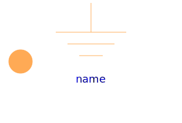
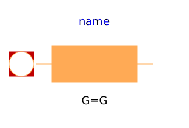
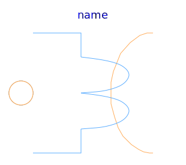
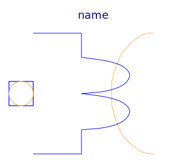
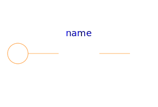
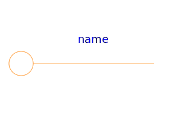
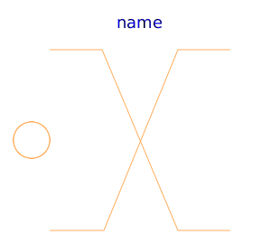

Basic components of the FundamentalWave library for modeling magnetic circuits. Machine specific components are located at Machines.Components.
| Name | Description |
|---|---|
|  Ground | Magnetic ground |
|
|
Salient reluctance |
|
|
Salient Permeance |
|  EddyCurrent | Constant loss model under sinusoidal magnetic conditions |
|  MultiPhaseElectroMagneticConverter | Multi phase electro magnetic converter |
|  QuasiStaticAnalogElectroMagneticConverter | Electro magnetic converter to only (!) quasi static analog, neglecting induced voltage |
|  Idle | Idle running branch |
|  Short | Short connection |
|  Crossing | Crossing of connections |